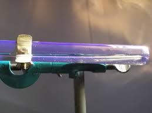
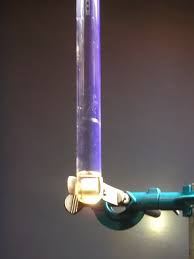

Ecco un piccolo post interlocutorio... uno stacchetto insomma.
Oggi sul bancone del mio lab batteva uno splendido raggio di sole, il cielo era terso e fuori soffiava un venticello che rendeva la vivibilità perfetta.
Mi son detto che nel blog ogni tanto ci vuole un tocco chimico-artistico, magari una bella elio-fluorescenza, vista l'occasione...

Quello che si vede è una provetta bagnata con una soluzione molto diluita (circa 1%) di acido antranilico in glicerina e colpita dal famoso raggio di sole che fa venir subito sera.

Il colore si apprezza di più sul velo sottile di liquido che bagna le pareti della provetta ed è di un bellissimo colore ametista. Purtroppo le foto non rendono appieno la realtà dell'effetto.
Enjoy